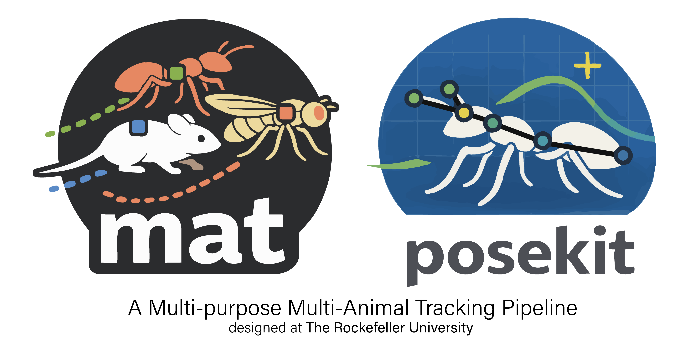

Multi-Animal-Tracker Documentation¶

Welcome to the central documentation for:
multianimaltracker/mat(tracking GUI)posekit-labeler/pose(pose labeling GUI)
Use This Site as the Source of Truth
This docs site is the canonical guide for setup, workflows, feature behavior, and reference material.
Quick Navigation¶
-
Getting Started
Installation, first launch, and platform setup.
-
User Guide
End-to-end workflow for tracking, post-processing, datasets, and identity analysis.
-
Developer Guide
Architecture, module map, data flow, extension points, and performance notes.
-
Reference
API docs, CLI docs, UI component references, FAQ, and changelog.
-
Technical Reference
Publication-style algorithm writeup plus LaTeX manuscript source for the current tracker.
Launch Commands¶
Local Docs Workflow¶
Scope¶
This documentation maps to the current package layout:
multi_tracker.appmulti_tracker.coremulti_tracker.datamulti_tracker.guimulti_tracker.posekitmulti_tracker.utils
Legacy flat docs are archived under docs/archive/legacy-flat/.